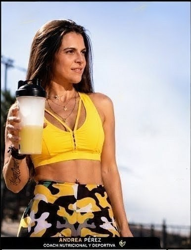
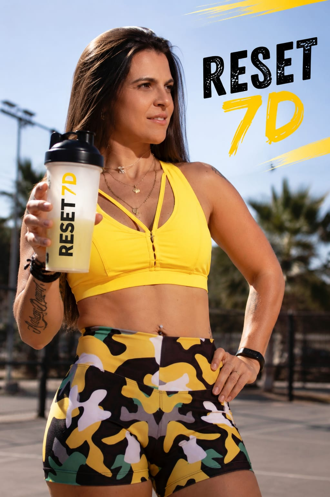
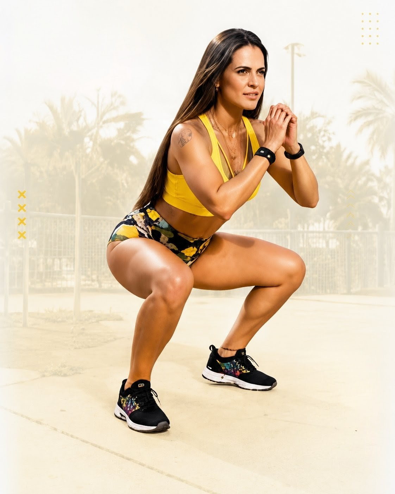
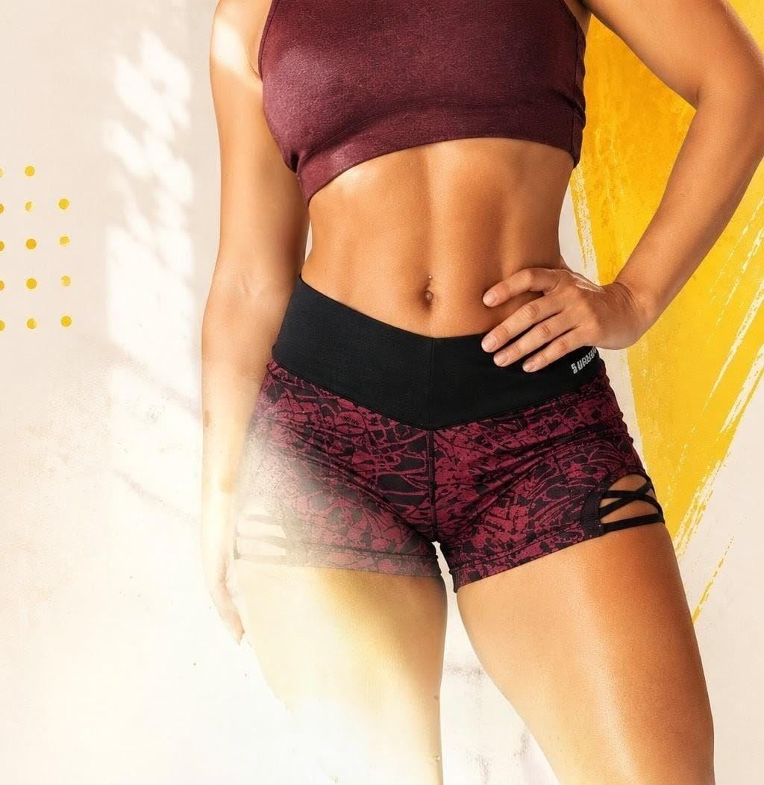
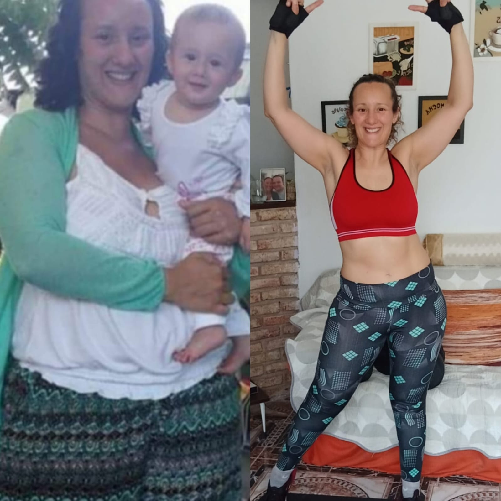
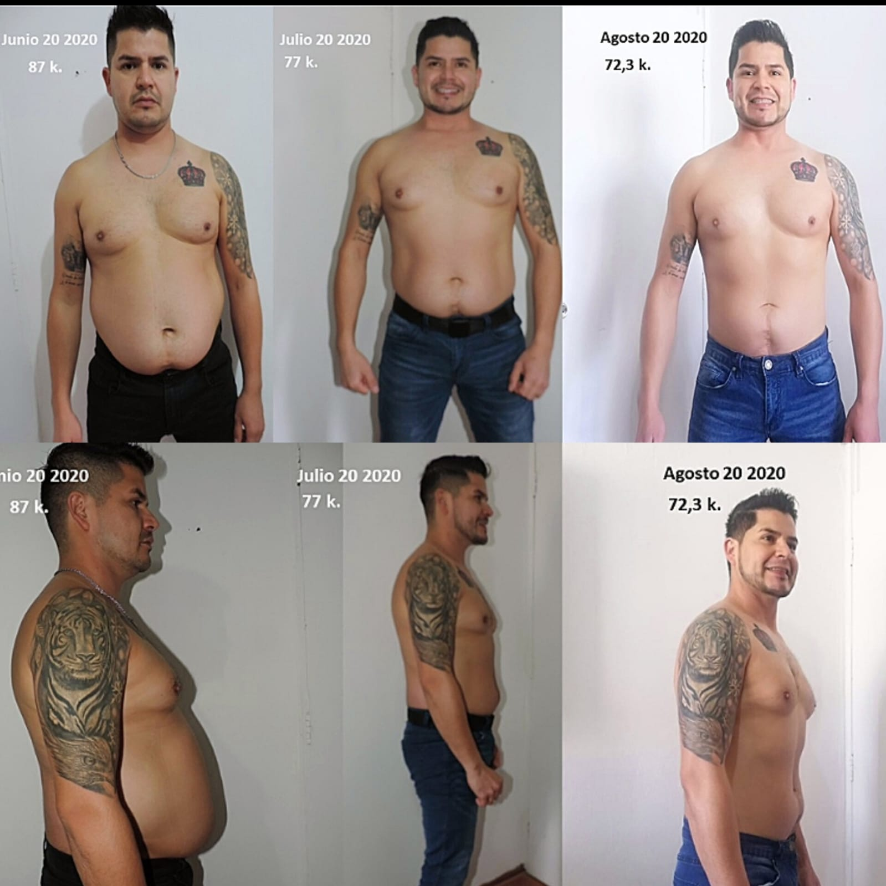
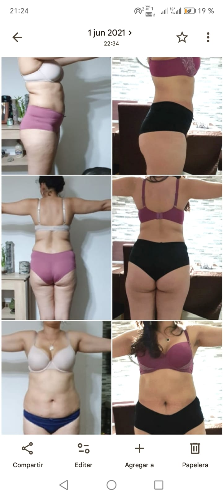
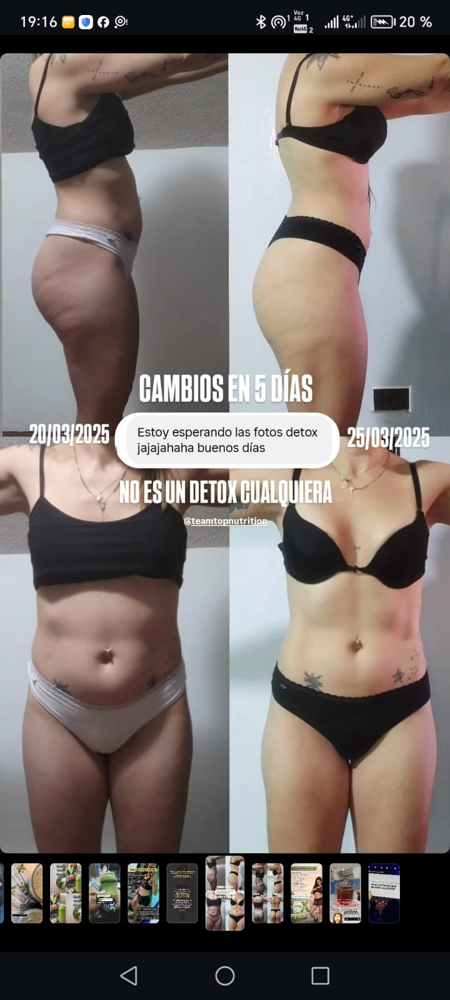

Si eres una mujer y mamá real, con agenda saturada y cero tiempos de sobra. Nada de planes rígidos ni promesas vacías: ciencia, nutrición, y hábitos que se sostienen, empezando por el Reset Metabólico, el primer paso indispensable.

Nutrición, Entrenamiento & Liderazgo de Hábitos
He aprendido a construir disciplina en medio de la maternidad, el cansancio y los desafíos de una vida real, no perfecta. Sostengo mi casa sola, sin red de apoyo, y he atravesado además un reto de salud familiar difícil. Aun así, elijo ser 1% mejor cada día.
Puedes querer cambiar tu cuerpo para verte mejor al espejo, pero cuando cuidas tu alimentación y construyes hábitos sólidos, descubres que la transformación va mucho más allá de lo físico. Sin magia, sin promesas vacías: únicamente ciencia, experiencia y constancia.
Lo extremo no se sostiene. Adaptamos el proceso a tu ritmo diario real.
Acompañamiento activo y soporte continuo en más de 35 países.
Tu cansancio no es falta de voluntad. Es saturación.
Cuando sostienes una casa sola, trabajas y no tienes red de apoyo, tu cuerpo vive en alerta constante. El estrés y la mala alimentación acumulan toxinas, tu digestión se frena y la fatiga se vuelve tu norma. No estás "vieja" ni te falta motivación: estás inflamada.
Para salir del colapso no necesitas una dieta restrictiva más. Necesitas un sistema por etapas que respete tu realidad.
Prepara y desinflama
Integra el orden en tu caos
Consolida tu vitalidad y tu libertad
El orden trae vitalidad. Y la vitalidad te devuelve tu identidad.
Diseñados paso a paso, siguiendo la lógica del Método T3, para potenciar resultados desde la primera semana.

Recupera tu energía base y dale un respiro a tu cuerpo.
Ideal si despiertas cansada, sientes pesadez abdominal y necesitas ver resultados rápidos para motivarte a seguir.

Aprende a sostener tus hábitos sin morir en el intento.
Estamos afinando los últimos detalles de este programa. Anótate y sé de las primeras en saber qué incluye.

Consolida tu físico, elimina el rebote.
El nivel superior para blindar tu salud a largo plazo. Anótate y sé de las primeras en saber qué incluye.
Sé que no tienes tiempo para perder. Sostienes tu hogar, pero ¿quién te sostiene a ti? Tu cuerpo te pide un respiro. Vamos a definir cómo vamos a reducir tu carga inflamatoria hoy.
Sí, merezco estar bienHidratación inteligente y suplementación 100% natural para acompañar tus objetivos — nunca reemplaza tu programa, lo potencia. Visita la tienda oficial de Andrea.
Si sientes que además de tu cuerpo quieres transformar tu economía, este es tu momento. Únete a mi equipo y construye un ingreso extra en tus propios tiempos libres.
Conoce Cómo Unirte
"-32kg y una recomposición corporal hermosa. No se trata solo del peso, sino de recuperar la energía y eliminar la fatiga mental, corporal y muscular, las molestias digestivas y los dolores de cabeza — y aumentar la autoestima en una madre es lo que deberíamos normalizar."

"Los hombres también buscamos mejorar nuestra condición física y salud. -15 kg en dos meses."

"Cambios notables en el aspecto de la piel y la desinflamación del cuerpo en tan solo 7 días, al inicio de mi transformación."

"Cambios visibles en solo 5 días con el protocolo de desinflamación. No es un detox cualquiera."